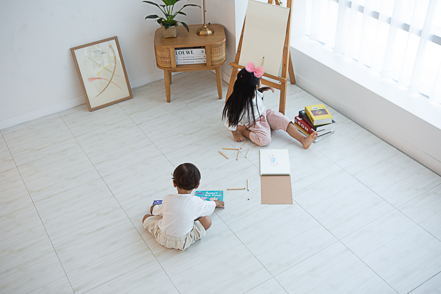
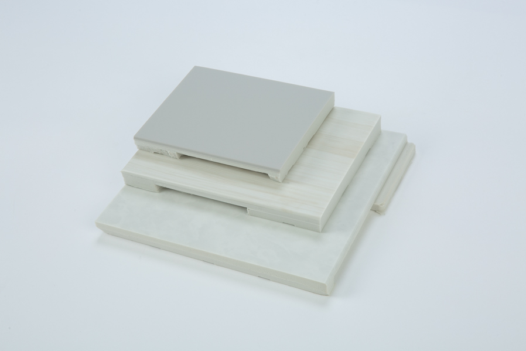
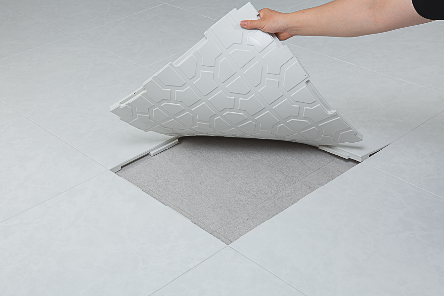

샘플을 받아보셨다면,
이제 후회 없는
선택 기준을 확인하실 차례입니다.
여러 브랜드를 비교 중이신 고객님을 위해
시공 전 꼭 확인해야 할 핵심 기준만 정리했습니다.

폴더매트로 시작해도,
결국 시공매트를 다시 고민합니다
아이와 반려견의 활동 반경은 생각보다 빠르게 넓어집니다.
처음에는 이렇게 생각합니다
"거실 한쪽만 깔면 되지 않을까?"
"일단 폴더매트로 시작해볼까?"
하지만 시간이 지나면 달라집니다
기고, 걷고, 뛰기 시작하면 복도와 주방까지 생활 동선 전체가 매트 고민의 대상이 됩니다.
- 매트가 없는 곳에서 넘어지는 일이 생깁니다.
- 거실만 덮어서는 층간소음 걱정이 완전히 사라지지 않습니다.
- 집 전체가 자연스럽게 이어지는 인테리어를 원하게 됩니다.
17T vs 22T,
어떤 두께가 맞을까요?
무조건 두꺼운 제품보다 우리 집 목적에 맞는 선택이 중요합니다.

| 구분 | 17T | 22T |
|---|---|---|
| 추천 가정 | 반려견 가정 생활 편의·난방감 |
유아 가정 층간소음·충격 흡수 |
| 쿠션감 | 안정적·생활성 | 도톰·보호감 큼 |
| 추천 목적 | 미끄럼방지 보행 편의 |
머리쿵 완화 뛰는 소음 완화 |
완성도는 틈새와 마감에서
갈립니다
사진으로는 비슷해 보여도, 매일 생활할수록 차이가 체감됩니다.

비교할 때 꼭 볼 점
이음선이 과하게 많지 않은지, 벽면과 모서리가 자연스럽게 마감되는지 확인해보세요.
돌봄매트가 강조하는 기준
넓은 매트 구성과 꼼꼼한 본사 직접 시공으로 집 전체가 한 공간처럼 이어지는 느낌을 지향합니다.
청소·물 흘림·습기,
관리가 중요합니다
시공매트는 하루 보고 결정하지만, 실제 사용은 몇 년간 이어집니다.

일상 관리
청소기와 물걸레 관리가 편한지, 물이나 음식물을 흘렸을 때 어떻게 관리하는지 확인하세요.
장기 사용
공기 순환 구조와 바닥 습기 관리, 시공 범위 선택까지 함께 살펴봐야 오래 만족합니다.
- 주방까지 시공할지 고민된다면 생활 습관과 관리 부담을 함께 봐야 합니다.
- 아이와 반려견이 매일 머무는 바닥일수록 관리 편의성은 중요합니다.
비싸야 프리미엄일까요?
가격이 높다고 무조건 더 검증된 매트는 아닙니다.
일부 브랜드는 높은 가격을 근거로 "고급"과 "프리미엄"을 이야기합니다. 하지만 정말 중요한 건 얼마나 비싼가가 아니라, 어디에서 선택받았는가입니다.

키즈 공간
시공 완료
시공 세대
오래 쓰는 제품이라면
업체의 지속성도 확인하세요
몇 년 뒤에도 믿고 연락할 수 있는 회사인지가 중요합니다.
우리 집은
몇 장이 필요할까요?
같은 평형이라도 구조와 시공 범위에 따라 수량은 달라집니다.
이런 정보가 있으면 더 빠릅니다
평면도, 거실 사진, 시공 희망 범위, 주방 포함 여부를 보내주세요.
상담에서 안내드리는 것
예상 장수, 대략적인 시공 금액, 17T·22T 추천 방향을 빠르게 도와드립니다.
거실 + 복도
주요 생활 동선을 먼저 보호하고 싶을 때 가장 많이 고민하는 기본 범위입니다.
거실 + 복도 + 주방
아이와 반려견의 활동 범위를 넓게 보호하고 싶을 때 상담이 많은 범위입니다.